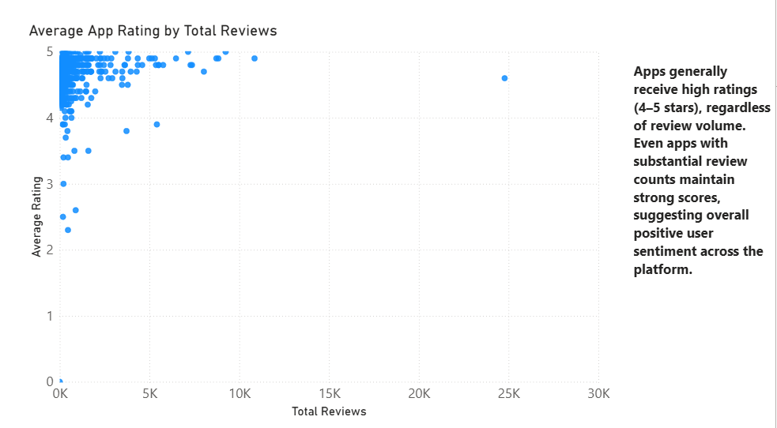
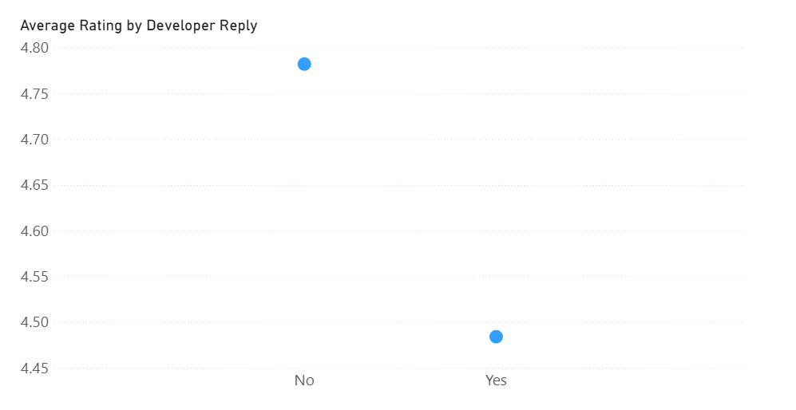
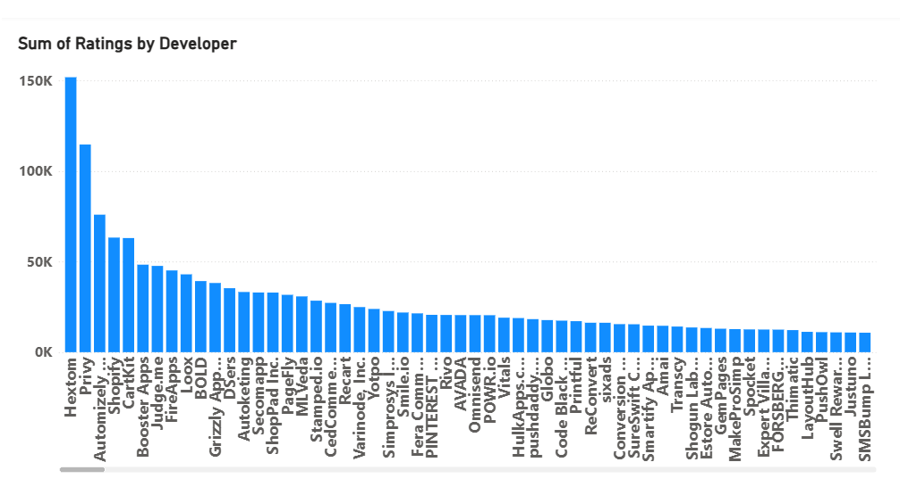
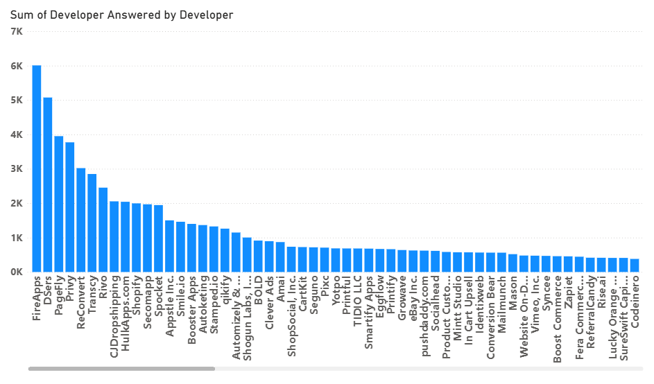

Shopify App Marketplace Analysis
What can ratings, reviews, and developer activity tell us about Shopify app performance?
The Shopify App Store contains thousands of apps competing for merchants' attention. Ratings and reviews provide visible signals of how users respond to those apps, but those signals do not necessarily tell the whole story.
This analysis explored app ratings, review volume, developer response activity, and developer engagement to identify patterns that could help distinguish stronger-performing apps from the rest of the marketplace.
The goal was not simply to identify the apps with the highest ratings. It was to investigate what the available data could actually tell us about app performance—and where it could not.
The Investigation
I began by examining the relationship between average app rating and review volume.
A reasonable assumption was that apps with larger numbers of reviews might also have stronger ratings. More reviews could indicate greater adoption, while consistently high ratings could indicate that the app is meeting user expectations.
The data did not provide a clear confirmation of that assumption.
The scatterplot showed a strong concentration of apps with high average ratings but relatively low review counts. Apps with large numbers of reviews were more dispersed across the rating range rather than consistently occupying the highest-rating area.
This suggested that review volume and rating are not simply two sides of the same success story.
An app can maintain an excellent rating without generating a large volume of reviews, while an app with substantial review activity does not automatically maintain a higher rating.
That shifted the investigation toward another question:
“What are developers doing in response to the feedback they receive?”
Rating and review volume
The relationship between average app rating and total review volume provided the first major signal in the analysis.

Power BI visualization: Average app rating compared with total review volume.
Developer Response Matters
The next stage of the analysis examined developer responses to customer reviews.
Developer engagement provides a different perspective from the rating itself. A review represents the customer's experience, while a response represents an opportunity for the developer to acknowledge feedback, address concerns, and demonstrate ongoing engagement with the user base.
The analysis revealed meaningful variation in how actively developers responded to reviews.
Customer sentiment and developer behavior are separate dimensions of app performance.
A strong rating tells us that customers generally evaluated an app positively. Developer response activity can tell us something about how actively the company is engaging with those customers.
However, the data does not establish that responding to reviews causes better ratings or greater app success.
That distinction matters.
The analysis identifies an observable relationship worth investigating, not a causal conclusion.
Developer response activity
Examining developer response behavior adds another dimension beyond customer ratings alone.

Power BI visualization: Developer response activity compared with average app rating.
Looking at Developer Activity
I then expanded the analysis beyond individual reviews to examine developer-level activity.
This provided additional context around how developers participate in the marketplace. Rather than treating each app as an isolated product, the analysis considered whether patterns in developer activity might help explain differences between apps.
The data suggested that developer engagement is an important dimension to consider when evaluating app performance, but it also reinforced the limitations of using any single metric as a definition of success.
High activity does not automatically mean high performance.
High ratings do not automatically mean high adoption. A large review count does not automatically mean a successful product.
Each metric describes a different part of the marketplace.
Developer-level patterns
Looking across developers provides additional context around marketplace participation and engagement.

Power BI visualization: App ratings by developer.

Power BI visualization: Developer response activity by developer.
The Data’s Limitations
The most important finding from this analysis was not a single metric or ranking.
It was the realization that success needs to be defined before the available metrics can be used to measure it.
The dataset provides information about ratings, reviews, and developer activity. Those measures are useful, but they are not the same thing as business outcomes.
For example, an app could have:
- A very high average rating but relatively few reviews
- A large number of reviews but a more moderate rating
- High developer response activity without evidence of greater adoption
- Strong customer sentiment without measurable revenue or retention data
Without a defined success metric, it would be easy to mistake an interesting pattern for proof of business performance.
The Missing Definition of Success
A stronger business analysis would begin by defining what success means for the Shopify App Marketplace.
Depending on the business objective, success could mean:
- Higher app adoption
- Greater revenue
- Stronger customer retention
- Lower churn
- More active users
- Higher conversion from listing views to installations
- Better long-term customer satisfaction
Those measures would allow ratings, reviews, and developer activity to be evaluated in relation to an actual business outcome.
That is the key limitation of the current dataset and also the clearest opportunity for further analysis.
Final Takeaway
The analysis began with a straightforward question: do the apps receiving strong customer ratings also tend to generate more review activity? The data revealed that the relationship was less straightforward than the two metrics alone might suggest.
Instead, the data showed that high ratings were common among apps with relatively low review counts, while review volume varied considerably across the rating range.
The analysis also highlighted developer response and activity as meaningful dimensions of marketplace engagement, while avoiding the unsupported conclusion that developer activity directly causes better app performance.
There is no single metric that adequately defines a successful Shopify app.
Ratings, reviews, and developer engagement each provide useful pieces of the picture. The next step would be connecting those signals to a clearly defined business outcome such as adoption, retention, or revenue.
That is where the analysis could move from describing marketplace behavior to supporting an actual business decision.